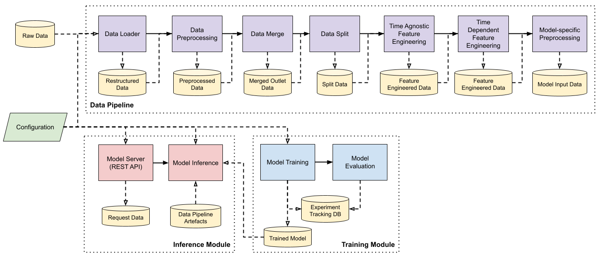

Project Overview#
Purpose of Documentation#
This documentation serves as a guide for the technical user in deploying and customising the Demand Forecasting module.
The reader is expected to have familiarity with:
the Linux environment
using the command line on Linux and Windows
managing Conda environments
Docker
This guide does not provide any information pertaining to deployment on any cloud service.
Architecture#
Software Components#
The following diagram illustrates the high-level components of the machine learning pipeline and how they interact with one another.

Deployment Architecture#
The following diagram illustrates how a user or an external system may interact with the Demand Forecasting module, as well as the high-level internal structure of each submodule.

Deployment Package Contents#
└── bipo_demand_forecasting/
├── conf/ (Created and to be bind mounted)
| └── base/
| └──parameters
| ├──model_training.yml
| └──data_split.yml
| ├──parameters.yml
| ├──logging.yml
| ├──inference_parameters.yml
| ├──constants.yml
| └──catalog.yml
├── data/ (Created and to be bind mounted)
├── logs/ (Created and to be bind mounted)
├── models/ (Created and to be bind mounted)
├── mlruns/ (Created and to be bind mounted)
├── docker/
| └── bipo-model-training-cpu.Dockerfile
├── docs/
├── scripts/
| ├── run_model_training.bat
| └── run_data_pipeline.bat
└── bipo-conda-env.yml
Configuration#
Path |
Description |
|---|---|
conf/base/ |
Contains all |
|
System-wide adjustable pipeline parameters. |
|
Adjustable inference pipeline parameters. |
|
Logging configuration for Kedro pipelines. |
|
Constants defining default values for key pipeline parameters. |
|
Registry of all data sources available for use by the project. See The Kedro Data Catalog for a complete guide. |
parameters/ |
Adjustable parameters specific to the |
parameters/ |
Adjustable parameters specific to the |
The files above have been configured with the default recommended parameters to be used on the default deployment architecture. Developers experimenting with different configurations or testing the module on a different environment should create a subdirectory within conf for the specific purpose (e.g. conf/local or conf/aws).
Data#
Path |
Description |
|---|---|
data/ |
|
01_raw |
Contains raw files from various data sources. |
02_dataloader |
Contains intermediate output files processed by the |
03_data_preprocessing |
Contains intermediate output files processed by the |
04_data_split |
Contains intermediate output files generated by the |
04a_time_agnostic_feature_engineering |
Contains intermediate output files generated by the |
05_feature_engineering |
Contains intermediate output files generated by the |
06_model_specific_preprocessing |
Contains intermediate output files processed by the |
07_model_evaluation |
Contains artefacts generated by the |
08_model_inference_output |
Subdirectory to store intermediate API request and response in JSON format. |
Docker images#
Path |
Description |
Release Date |
|---|---|---|
docker/ |
Contains all Docker archive files. Containerised image are exported into |
|
|
Docker image archive containing model serving API and inference submodule. |
18/08/2023 (initial deployment) |
|
Docker image archive containing model training submodule. |
19/10/2023 (final deployment) |
|
Dockerfile used to build the Docker image in |
19/10/2023 (final deployment) |
|
Dockerfile used to build the Docker image in |
19/10/2023 (final deployment) |
Logs#
Path |
Description |
|---|---|
logs/ |
Contains all logs generated by the system. |
|
Logs events that occur in normal system flow. |
|
Logs events where errors occur that interrupts the normal system flow. |
Trained model file(s)#
The trained model file would be stored in an AWS S3 bucket. To ensure successful download, necessary S3 permissions are required to be configured in AWS Roles settings by the AWS administrator.
Path |
Description |
|---|---|
models/ |
Contains all trained models saved in pickle format used in the pipeline, with |
|
Model weights of OrderedModel from the statsmodels library |
|
Model weights of ExplainableBoostingClassifier from the InterpretML library |
Notebooks#
Path |
Description |
|---|---|
notebooks/ |
Contains Jupyter notebooks with standalone code (not part of ML pipeline). |
|
Notebooks used to generate and display explanations for EBM and OrderedModel. |
Scripts#
Path |
Description |
|---|---|
scripts/ |
Contains scripts to run on the host machines. |
|
Script to install all required packages on an Ubuntu deployment environment. |
|
Script to load and run the model serving Docker container. |
|
Script to load and run the model training Docker container. |
|
Script to load and run the data pipeline (within the training Docker container) to generate new datasets for model training. |
OS port usage#
Any firewall configurations or other applications installed should not be using the stated ports:
Port |
Description |
|---|---|
2375 |
Docker unencrypted communication |
2376 |
Docker encrypted communication |
8000 |
FastAPI endpoint |